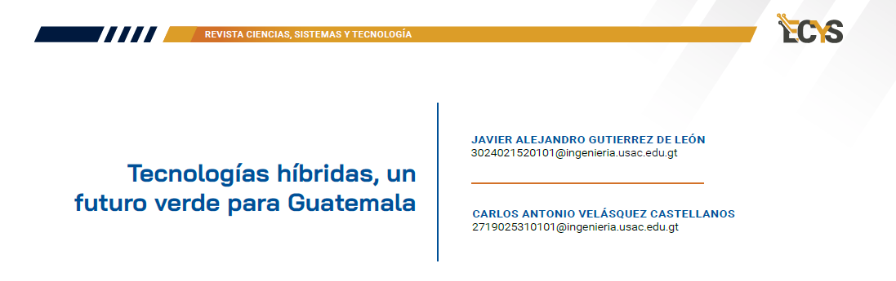

11 Tecnologías híbridas, un futuro verde para Guatemala {#3.2 }

PALABRAS CLAVE Energías renovables, Seguridad energética, Cambio climático, Políticas públicas, Transición energética, Calentamiento Global
11.1 Introducción
En una sociedad mundial cada vez más consciente de los desafíos ambientales, la necesidad de transiciones energéticas efectivas se vuelve cada vez más importante. América Latina ha emergido como un epicentro de innovación, donde países como Colombia, Perú y Costa Rica han creado un camino ejemplar hacia la sostenibilidad.
Este artículo explora las lecciones aprendidas de estas naciones y plantea el desafío que enfrenta Guatemala para lograr un futuro energético más verde y responsable, logrando la diversificación de la matriz hasta la promoción de tecnologías renovables. Vemos cómo Guatemala puede liderar su propia revolución energética.
11.2 Artículo
Al pasar de los años las necesidades de la población en distintos sectores geográficos del mundo han requerido atención de parte de los gobiernos y empresas que se encargan de proveer de ciertos servicios a la sociedad; el problema es que cada vez existe una mayor demanda gracias al crecimiento de la población, muchas veces al requerir cubrir las necesidades no se piensa en los problemas que pueden traer a futuro las soluciones momentáneas que se les dan y esto recae en daños al planeta que cada vez nos acercan a un cambio climático sin precedentes que podría llevarnos a la extinción.
Muchos países desarrollados han trabajado en la forma de contrarrestar estos daños al utilizar soluciones más ecológicas que eviten que el problema siga empeorando, pero este es un trabajo que debe llevar a cabo toda la población mundial para que se logre hacer un cambio de verdad, por lo que países en vías de desarrollo han comenzado a plantear ideas de cómo poder contribuir a esta causa de la humanidad, centrándose en buscar soluciones que se adapten a las condiciones económicas de cada país, principalmente analizando los sectores de la industria donde se llega a contaminar más en sus actividades. En el caso de Guatemala se han analizado sectores como la agricultura, Uso y cambio de suelo (USCUSS), procesos industriales, desechos y energía. Como podemos observar en la figura 1, el sector de energía en los últimos años ha sido el principal emisor de gases de efecto invernadero, por lo que es inminente pensar en que es necesaria una transición energética en el país para comenzar a utilizar energía verde.
Figura 11.1: Evolución de emisiones de gases de efecto invernadero por sector
Es importante que en Guatemala se tenga una proyección a un nuevo modelo energético, ya que nos enfrentamos a otro desafío como lo es la emisión de dióxido de carbono, que con el paso de los años ha ido en aumento, consecuencia de una mayor demanda; pero los avances en la producción de nuevas formas de obtención de energía han tenido un estancamiento, esto es problema de falta de conciencia de parte de las autoridades en tomar cartas en el asunto porque ha pasado a un segundo plano, al ser un problema silencioso puede pasar desapercibido pero al ser progresivo poco a poco van saliendo problemas que se pudo haber evitado.
Las nuevas fuentes de energia es un tema relevante para poder reducir parcial o totalmente las emisiones de gases de efecto invernadero, como primero se tiene que ser capaz de utilizar la mayor cantidad de energías libres de emisiones; esto se puede hacer mediante la combinación de varias fuentes y unificarlas en una sola, de tal manera que esta pueda además de suplir la demanda, reducir drásticamente las emisiones contaminantes. No es un problema fácil por parte de las autoridades, pero de parte de los ciudadanos también tiene que ser una responsabilidad el control de la electricidad y darle el mayor beneficio a esta, por ello para resolver es necesario tener un plan de progresivo para ir controlando y adaptando a nuevas tecnologías y fuentes de obtención de luz, con el fin de minimizar el impacto ambiental.
Diversos países latinoamericanos han implementado exitosas transiciones energéticas, por ejemplo, Colombia, ha destacado en la diversificación de su matriz energética, incorporando fuentes renovables como la energía hidroeléctrica y solar, esta diversificación ha permitido no sólo abastecer la creciente demanda, sino también reducir las emisiones de gases de efecto invernadero.
En Perú se ha tenido mucho desarrollo de proyectos de energía renovable, tratando de aprovechar al máximo su potencial en recursos como lo son la energía solar y eólica, además de implementar políticas que fomenten la inversión en estas tecnologías en el país logrando contribuir significativamente a la reducción de la huella ambiental.
Costa Rica ha logrado gran relevancia a nivel mundial al lograr operar casi por completo con fuentes renovables durante períodos significativos; su enfoque en la hidroeléctrica, geotérmica y otras fuentes de energía limpia, ha demostrado que es posible lograr una transición energética exitosa, incluso en naciones con recursos limitados.
Al tomar de referencia estos casos no solo es posible, sino también esencial enfrentar los desafíos ambientales actuales; en el caso de Guatemala, la diversificación de la matriz energética, así como aprovechar fuentes locales, como la energía hidroeléctrica y geotérmica, se podrá ayudar a reducir la dependencia de combustibles fósiles y disminuir así las emisiones de gases de efecto invernadero en gran medida en el país.
Guatemala debe promover la inversión en tecnologías renovables, facilitando la participación del sector privado y buscando alianzas internacionales para desarrollar proyectos sostenibles, es necesaria la adopción de políticas que incentiven la inversión en energías limpias y faciliten la integración de tecnologías emergentes, como el almacenamiento de energía.
Siguiendo el ejemplo de estos países, Guatemala podría implementar campañas educativas que promuevan la eficiencia energética en hogares, empresas y servicios públicos, fomentar el uso responsable de la energía y la incorporación es tarea tanto de parte de las empresas como de los usuarios finales, además de concientizar el ahorro de energía residencial y sectores de servicios, teniendo siempre en cuenta tratar de realizar una eficiencia de los procesos de transformación que aumenten la energía utilizada para reducir al máximo los residuos, de esta manera se aprovecha mucho mejor los recursos.
11.3 Conclusiones
Para lograr la sostenibilidad, Guatemala se encuentra en una encrucijada desafiante. Al poner de referencia el trabajo de otros países latinoamericanos, queda claro que la transición energética no solo es esencial, sino también alcanzable. Fomentar la inversión en tecnologías limpias y educar a la sociedad son pasos cruciales para que Guatemala tenga la oportunidad de no solo ser un espectador en la revolución verde, sino un usuario que aproveche los beneficios tanto económicos como sociales.
Es necesario tener un plan a largo plazo dado que, al ser una problemática cambiante, Guatemala tiene que realizar soluciones progresivas que puedan dar soluciones a los retos entrantes. La fuente de inversión para las soluciones generalmente tiene que venir de organizaciones internacionales que han implementado correctamente los modelos energéticos en sus países, por ello la capacitación de soluciones implementadas internacionalmente y las adaptaciones a Guatemala es complicado, pero con un beneficio generalizado.
11.4 Referencias
[1] Caldera-Serrano, Jorge. 2019. “Análisis de las Políticas de I+D+I En Panamá Implementadas Por SENACYT”. Revista Ibero-Americana de Ciência Da Informação 12 (3): 956-75. https://doi.org/10.26512/rici.v12.n3.2019.24441.
[2] Castellano, y Bastidas. s. f. “Memorias I CONGRESO Internacional Gestión Integral Frente Al Cambio CLIMÁTICO”. Universidad de La Guajira. https://www.researchgate.net/profile/Jhonny-Perez- Montiel/publication/349671236_Analisis_comparativos_de_dos_modelos_para_estim ar_nivel_de_inundacion_Caso_Distrito_de_Riohacha_La_Guajira- Colombia/links/603bcaefa6fdcc37a85d48d1/Analisis-comparativos-de-dos-modelos- para-estimar-nivel-de-inundacion-Caso-Distrito-de-Riohacha-La-Guajira- Colombia.pdf#page=330.
[3] López, y Picado. 2012. “Plantas, fertilizantes y transición energética en la caficultura contemporánea de Costa Rica.
[4] Serricchio. 2022. “Hoja de Ruta de Transición Energética En Guatemala”. Deloitte, noviembre. https://www.enel.com.co/content/dam/enel- co/espa%C3%B1ol/etr/archivos- guatemala/Informe%20Final%20Publicado%20ETR%20Guatemala.pdf.
[5] VICENTE. s. f. “Tecnologías emergentes para la transición energética en España”. Centro Universitario de la Defensa. https://zaguan.unizar.es/record/119024/files/texto_completo.pdf?version=1.